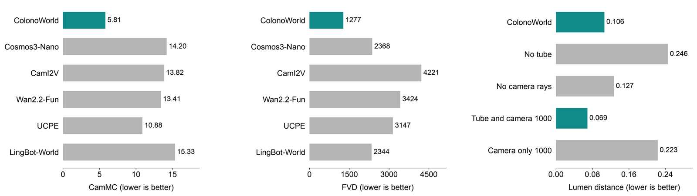

A world model for colonoscopy
Colonoscopy navigation systems are moving from guiding the endoscopist to steering the scope on their own. A wrong motion can injure the patient, so these systems need a world model of colonoscopy to be built and tested. Such a model has to follow the commanded scope motion, keep the colon anatomy consistent, and show lesions and procedural events.
Camera-controlled generators trained on general scenes lose the colon's structure as the camera moves. Endoscopic video generators have no camera control.
ColonoWorld is a colonoscopy world model conditioned on a camera trajectory and a coarse 3D tube of the colon, trained on in vivo videos. From a whole-colon tube it generates a full procedure from the cecum to the rectum, also for colon shapes it has not seen. It places polyps, instruments and irrigation at a chosen location and time.
Against state-of-the-art video generators, ColonoWorld reduces camera trajectory error by 32% and FVD by 29%. Code and annotations will be released.
Camera path and colon tube as conditions
A pretrained video diffusion model takes two conditions: the commanded camera trajectory, and a coarse 3D tube of the colon rendered from that camera.
The rendered tube goes through the video VAE and enters with the noise, so each frame keeps the lumen, folds and bends of the colon.
Each chunk starts from the last frame of the previous one. This gives one continuous procedure from the cecum to the rectum.
The commanded scope pose for every frame.
Fitted to the colon wall of each training video; a whole-colon tube at inference.
Polyps, snares, irrigation and narrow-band imaging as a mask or flag on the same tube.


Following the commanded camera
One starting frame, different camera commands. The view follows each command and the colon stays consistent.
Full procedure against video generators
Same colon, same camera path, same first frame. Left: the endoscope inside the colon model, in sync with the videos. 8× speed.
Placing events in the procedure
Left of each pair: the input tube with the condition. Right: the generated video.
The tube keeps the anatomy
A full procedure with the same camera path and seed, generated without the tube and with it.
Benchmarks


BibTeX
@article{hong2026colonoworld,
title = {ColonoWorld: Camera-Controlled Full-Procedure
Colonoscopy Video Generation},
author = {Hong, Jihwan and Cho, Sunghwan Steve and Ho, Ping Shu and
Kim, Joo Seong and Kim, Bokyung and Kim, Nam-Joon and
See, Simon and Kim, Ji Won and Do, Jaeyoung},
year = {2026}
}